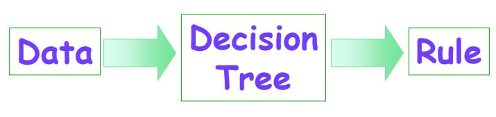
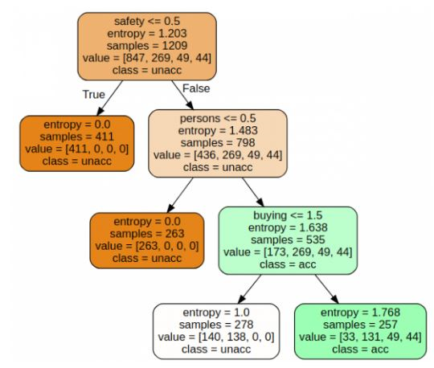

Decision Tree¶
Pohon keputusan adalah alat pendukung yang menggunakan grafik atau model keputusan seperti pohon dan kemungkinan konsekuensinya. Ini adalah salah satu cara untuk menampilkan algoritma yang hanya berisi pernyataan kontrol bersyarat.
Pohon keputusan adalah struktur seperti bagan alur di mana setiap simpul internal mewakili "tes" pada suatu atribut, setiap cabang mewakili hasil dari tes, dan setiap simpul daun mewakili label kelas (keputusan diambil setelah menghitung semua atribut). Jalur dari root ke daun mewakili aturan klasifikasi.
Konsep Decision Tree
Mengubah data menjadi pohon keputusan (desision tree) dana aturan-aturan (rule)

Konsep Data Dalam Decision Tree
- Data dinyatakan dalam bentuk tabel dengan atribut dan record.
- atribut menyatakan suatu parameter yang dibuat sebagai kriteria dalam pembentukan tree
- Atribut memiliki nilai-nilai yang dinamakan dengan instance
Proses Dalam Decision Tree
- Mengubah bentuk data (tabel) menjadi model tree.
- Mengubah model tree menjadi rule.
- Menyederhanakan Rule (Pruning).
Implementasi¶
Import Library
import os
import numpy as np
import pandas as pd
import numpy as np, pandas as pd
import matplotlib.pyplot as plt
from sklearn import tree, metricsLoad Data Set
data =
pd.read_csv('data/car_quality/car.data',names=['buying','maint','doors','persons','lug_boot','safety','class'])
data.head()
buying maint doors persons lug_boot safety class
0 vhigh vhigh 2 2 small low unacc
1 vhigh vhigh 2 2 small med unacc
2 vhigh vhigh 2 2 small high unacc
3 vhigh vhigh 2 2 med low unacc
4 vhigh vhigh 2 2 med med unaccCheck a few information abaout the data set
data.info()
<class 'pandas.core.frame.DataFrame'>
RangeIndex: 1728 entries, 0 to 1727
Data columns (total 7 columns):
buying 1728 non-null object
maint 1728 non-null object
doors 1728 non-null object
persons 1728 non-null object
lug_boot 1728 non-null object
safety 1728 non-null object
class 1728 non-null object
dtypes: object(7)
memory usage: 94.6+ KBIdentify the target variabale
data['class'],class_names = pd.factorize(data['class'])Variabel target ditandai sebagai kelas dalam bingkai data. Nilai-nilai hadir dalam format string. Namun, algoritma ini membutuhkan variabel yang akan dikodekan ke dalam kode integer yang setara. Kita bisa mengonversi nilai kategorikal string menjadi kode integer menggunakan metode faktorize dari panda library.
Mari kita periksa nilai yang disandikan sekarang.
print(class_names)
print(data['class'].unique())
Index([u'unacc', u'acc', u'vgood', u'good'], dtype='object')
[0 1 2 3]Identify the predictor variablels and endcode any string variables to ewuivalent integer codes
data['buying'],_ = pd.factorize(data['buying'])
data['maint'],_ = pd.factorize(data['maint'])
data['doors'],_ = pd.factorize(data['doors'])
data['persons'],_ = pd.factorize(data['persons'])
data['lug_boot'],_ = pd.factorize(data['lug_boot'])
data['safety'],_ = pd.factorize(data['safety'])
data.head()
buying maint doors persons lug_boot safety class
0 0 0 0 0 0 0 0
1 0 0 0 0 0 1 0
2 0 0 0 0 0 2 0
3 0 0 0 0 1 0 0
4 0 0 0 0 1 1 0cek type data sekarang :
data.info()
<class 'pandas.core.frame.DataFrame'>
RangeIndex: 1728 entries, 0 to 1727
Data columns (total 7 columns):
buying 1728 non-null int64
maint 1728 non-null int64
doors 1728 non-null int64
persons 1728 non-null int64
lug_boot 1728 non-null int64
safety 1728 non-null int64
class 1728 non-null int64
dtypes: int64(7)
memory usage: 94.6 KBSelect the predictor feature and the target variable
X = data.iloc[:,:-1]
y = data.iloc[:,-1]Train the split
# split data randomly into 70% training and 30% test
X_train, X_test, y_train, y_test = model_selection.train_test_split(X, y, test_size=0.3, random_state=0)Training / Model fitting
# train the decision tree
dtree = tree.DecisionTreeClassifier(criterion='entropy', max_depth=3, random_state=0)
dtree.fit(X_train, y_train)Model Parameters
# use the model to make predictions with the test data
y_pred = dtree.predict(X_test)
# how did our model perform?
count_misclassified = (y_test != y_pred).sum()
print('Misclassified samples: {}'.format(count_misclassified))
accuracy = metrics.accuracy_score(y_test, y_pred)
print('Accuracy: {:.2f}'.format(accuracy))
Misclassified samples: 96
Accuracy: 0.82Visualization of the decision graph :
import graphviz
feature_names = X.columns
dot_data = tree.export_graphviz(dtree, out_file=None, filled=True, rounded=True,
feature_names=feature_names,
class_names=class_names)
graph = graphviz.Source(dot_data)
graph